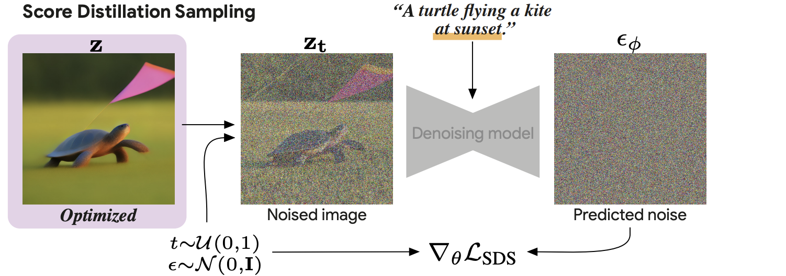

Delta Denoising Score
Carousel in here
This paper introduces Delta Denoising Score (DDS) a novel diffusion-based scoring technique which optimizes a parametric model for the task of image editing. Unlike the existing Score Distillation Sampling (SDS), which queries the generative model with a single image-text pair, DDS utilizes an additional fixed query of a reference image-text pair to generate delta scores that represent the difference between the outputs of the two queries. By estimating noisy gradient directions introduced by SDS using the source image and its text description, DDS provides cleaner gradient directions that modify the edited portions of the image while leaving others unchanged, thereby yielding a distilled edit of the source image. The analysis presented in this paper supports the power of the new score for image-to-image translation. We further show that the new score can be used to train an effective zero-shot image translation model. The experimental results show that the proposed loss term outperforms existing methods in terms of stability and quality, highlighting its potential for real-world applications.



We thank Ben Poole, Elad Richardson, Ron Mokady and Jason Baldridge for their valuable inputs that helped improve this work.